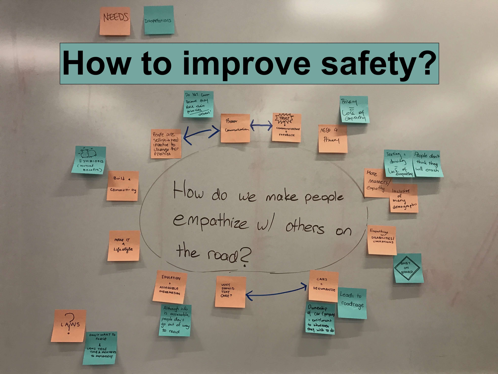
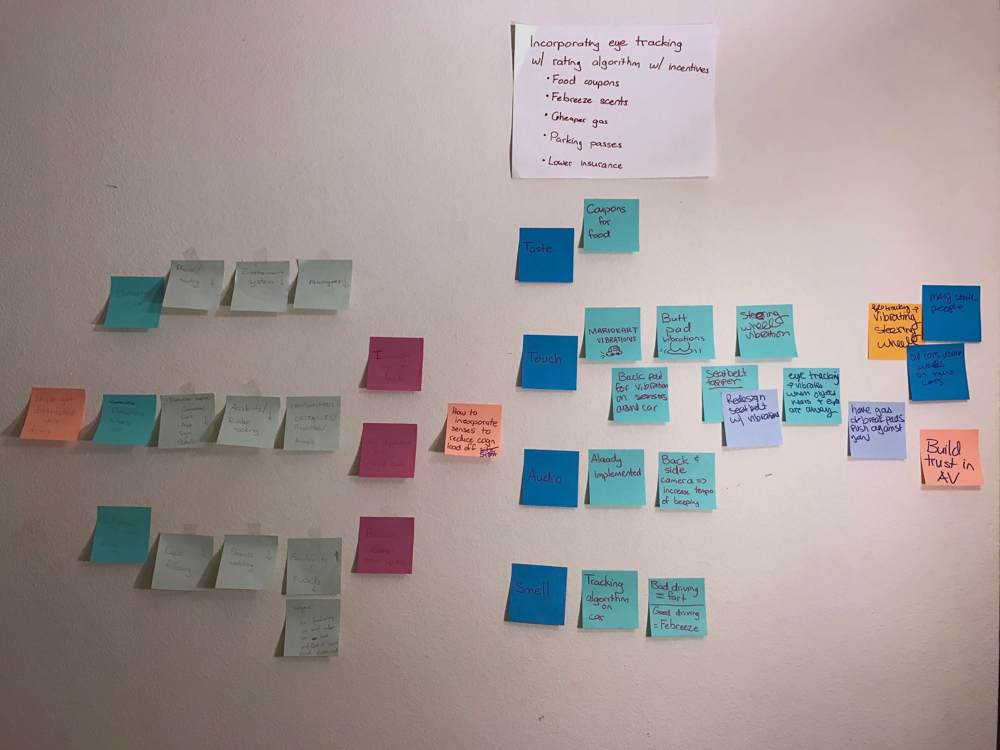
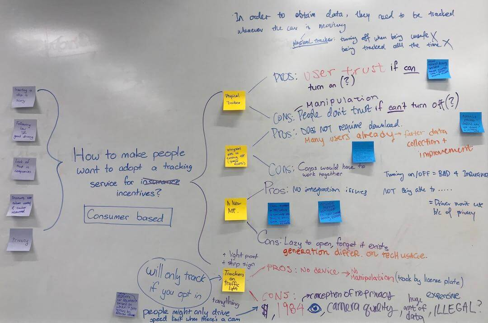
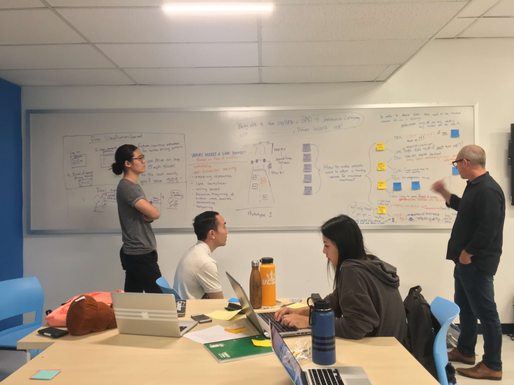
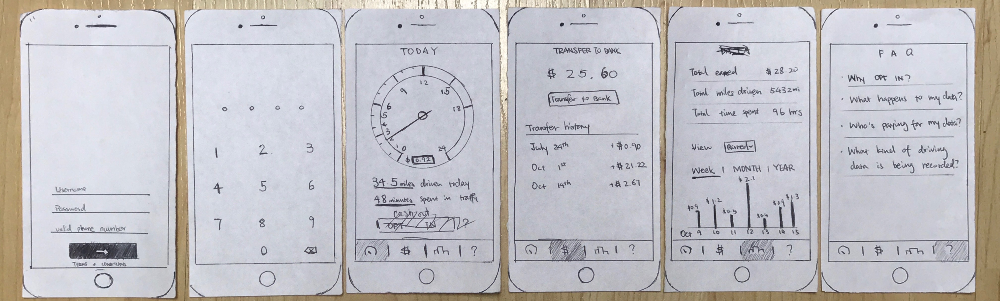
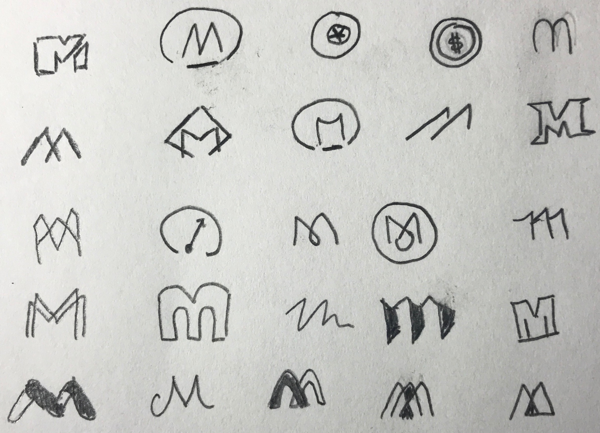
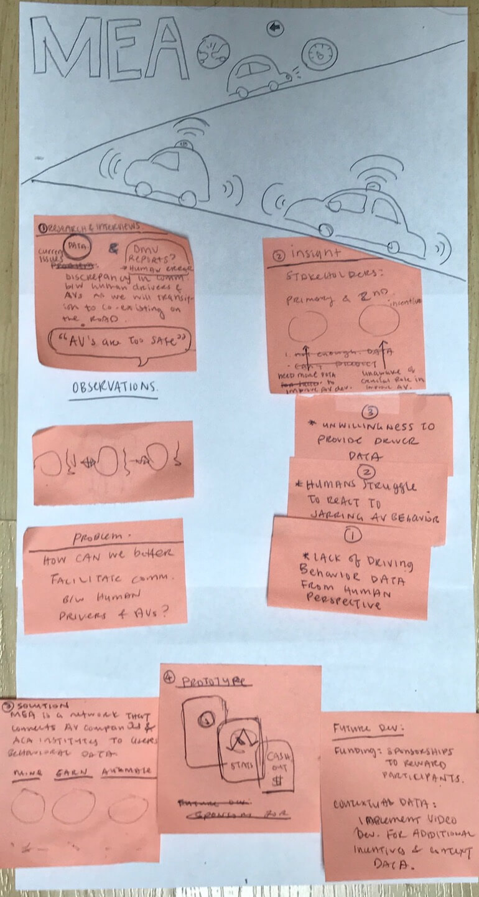
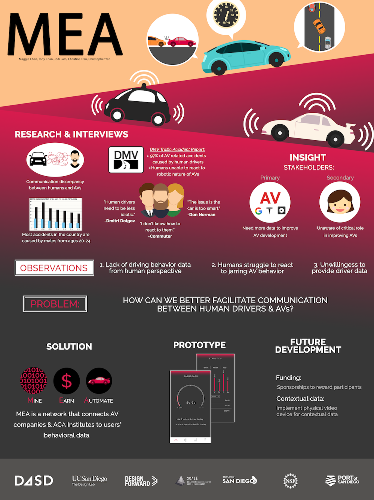
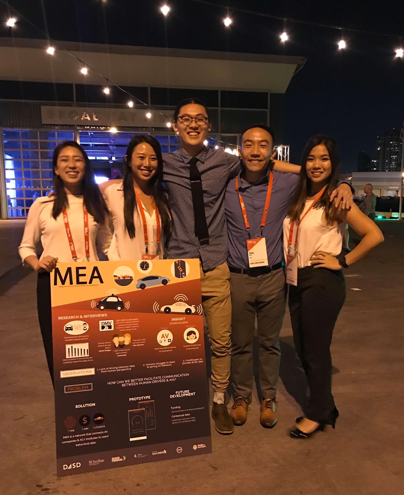

Timeline: Oct - Nov 2017
Project Type: Hackathon
My Role: Product Designer
Tools: Adobe XD, Illustrator, inVision
Skills: User Research, Interaction Design
MEA connects autonomous vehicle (AV) companies to driver behavioral data. Users download an app that provides incentives in exchange for data which contributes to AV development. The app will track acceleration, braking, turns, lane changes, average speed relative to traffic, driving duration/time and phone usage. The data is open source to any institution and anonymized to ensure privacy. Users will have the option to cash out earnings into their bank account or donate to charities. This creates a positive feedback loop where drivers can earn money for driving and AV companies can improve their algorithm for increased road safety.
I entered city wide hackathon by Design Forward San Diego that centered around designing solutions to improve the experience of moving around in San Diego. Participants were encouraged to use the human centered design process on 4 main topics: safety on the street, accessibility, commuter experience, and autonomous vehicles. I teamed up 4 others. Check out the contest details here.
Our initial topic of interest
was guided by
San Diego’s Vision
Zero initiative, which aims to
reduce the number of commuter casualties to 0. We began by observing drivers at the “Fatal 15”
intersections, which are famous
for the highest number of pedestrian injuries and deaths in the past 15 years.
Observations:
- Drivers often rushed to turn right but would come to an abrupt stop when realizing there were pedestrians.
- Drivers often looked left for cars but not right.
- Some pedestrians J walked to make it to the bus.
Field Observations
At these intersections, we interviewed J
walkers about their general commuting patterns.
Main Concerns:
- Broad agreement that the distance between the crosswalks were too far
- Crosswalks didn't do a good job in catching a driver’s attention
- Maybe have insurance companies track driving patterns to enforce safe behavior
Field Notes
We also conducted an online survey asking people of their general driving patterns. The replies indicated that people knew distractions like cell phones and conversations were the main causes for accidents, but they continue to text and drive.
Survey Results
Users typically thought that they were good drivers, even
though more than half of them were involved in an accident.
Insights:
- Confidence in driving causes people to put their own priorities over the safety of others
- Being in a car lowers empathy because drivers don’t see each other as people, but as vehicles
Driver Confidence
We began to ideate on ways to increase
the feeling of
empathy
between drivers on the road. Our prior research showed that the main user needs were privacy,
better
communication, and incentives to slowly change people to adapt more cognizant driving
behaviors.
We struggled during this phase because empathy varies from
person to person. This made it difficult to ideate for a broad user base. We
needed to take a different
angle towards improving safety on the road.
Needfinding
Our professor's research showed that driving becomes more passive over time because drivers get accustomed to technology and the environment. They slowly develop motor functions that react almost subconsciously to environmental cues. This can be linked to the survey results where a large number of users had high confidence in their driving abilities. Familiarity = confidence. How do we break drivers out of this passive state of driving?
Double Diamond
 We noticed that many
accidents were due to the driver’s dependency
on vision. We converged on this point and began ideating for solutions that incorporated
other senses to reduce the cognitive load off of sight. This stage was difficult since many of our
ideas were already integrated into semi-AV cars. There was also the concern of overstimulation
or even increased distractions.
We came across a DMV report on all AV related accidents; more than 90% of which were
caused by humans. The AVs make the correct decisions, but in such an irregular fashion that
human drivers are unable to react
in time.
As we progress towards a society driven by AV’s, there will be a long transitional period where
both AVs and human-driven cars are on the road. Human errors on the road could be dealt with safely if
AVs were supplied with sufficient
data about how humans react to unexpected situations. Thus we pivoted to trying to get drivers to
extend
their driving data to AV companies.
Ideation
Problem Statement: "A challenge that AVs are facing is how to coexist with human drivers on the road. Companies need an abundance of data on regular human driving patterns to create a safe transitionary period in which AVs and humans share the road."
Our hypothesis: AV companies will pay drivers in exchange for their data. We learned that companies like Tesla open source their drivers’ data, so it may not be feasible to assume that companies would pay for it. Mr. Robinson (Freshform & Design Forward CEO) pointed out that our solution may be unique because the current data available to AV companies comes from “super-users” such as Uber drivers and Tesla owners, who do not represent the average driver. Longitudinal data from everyday users over time can reveal interesting fluctuations in driving patterns and trends.
Contest Day
Primary
Stakeholders:
AV companies and academic institutions in need of driving data for
AV research. They get access to organic data from a variety of locations, letting them
develop more advanced AVs.
Secondary Stakeholders: Everyday drivers. In the short term, they are able to generate
extra revenue and in the long run, daily commutes will not only improve safety for them but also for
future generations
Each member was responsible for interviewing 10 potential stakeholders. Every single college
student said they would use the app. The preferred minimum amount of incentive averaged at 58¢
per hour of driving data.
Of all the professionals we interviewed (mainly professors and school employees), only a handful
said they were willing to use the service. When asked why not they said they didn’t care about AVs and
the incentive isn’t a large
enough sum for them to risk their privacy. Regardless, this is still significant because research shows
that drivers between ages 20 and 24 cause the most accidents on the road (McClellan Law).
Storyboards
Our competitors were
companies like
Progressive,
Dash, Automatic, and Zubie, who have devices that pull information from the OBD-II port of
cars. Their participants must purchase an additional, physical plug-in device.
MEA is unique because our solution doesn’t require monetary commitment and primarily uses
smartphone capabilities for data collection.
The novelty in MEA lies in targeting longitudinal data collected from everyday drivers, geared
towards improving the development of AV artificial intelligence. This data enables a visualization of
individual driving trends over time, giving the dataset high ecological validity.
I
pitched this idea to a software engineer from Uber at a job fair.
He saw the value behind the data we were trying to collect, but felt that it would only work if we got
massive amounts. Thus, a potential
pitfall of MEA is that the effectiveness of the data depends on how many people adopt it.
Idea 1: Track data by
using cameras built into stop
lights. They would track a driver’s license plate if they opt in and users can log onto a website to see
everything. There are huge cost and feasibility issues with this idea.
Idea 2: Use mobile GPS technology to track speed,
acceleration, and braking patterns. As for micro-behaviors like
lane changes and merges, the phone’s accelerometer and gyroscope can detect
sensitive rates of change on a 3D plane by measuring linear acceleration of movement and angular
rotational velocity.
What data improves AI in AV
Data Visualization
We focused on making a simple
interface that
centered
around generating money; the statistical visualization was secondary.
We didn’t encounter any problems in our usability tests and users figured out how to navigate
the interface pretty quickly. This may be because the interface follows the familiar design shown
in most bank apps.
A guest lecturer suggested us to incorporate an option to donate to charities
to attract users who don't care about the money incentive. This adds an intrinsic dimension to the
service that gives people the opportunity to feel good about themselves for simply driving.
Paper Prototype
I sketched out several logos and realized that the “M” shape is very aesthetically pleasing. We wanted something symmetrical that also evokes a “car” feeling when you see it. We chose the arced m because it reminded us of a database and the circle around it is supposed to resemble a wheel.
Logo Sketches
Digital Logo


The digital prototype was very similar to the paper prototype, aside from the donate to charity feature. Check out the interactive prototype below:
We had a complex idea with a lot of nitty gritty details so it was difficult balancing aesthetics while maintaining comprehensiveness for the poster. We concentrated on illustrating our human centered design process to show the importance behind MEA.
Paper Draft
Digital Poster
Prototype Commercial
I had an awesome experience at the contest. I got an opportunity to network with industry professionals and felt inspired by everyone’s passion for human centered design. It was very humbling to find out that the winner was a high school team because it taught me that there’s exceptional talent everywhere. I have a long way to go until I’m an expert in human centered design, but I will take every opportunity I can to improve my skills.
Contest Day
Although the contest ended, there was still 6 weeks left in the class. This gave us the opportunity to iterate and improve on our solution based on the feedback from the judges and other professionals.
Check out part 2 (It gets better!)

EventQR
A web app that lets users create & scan events encrypted into a QR code, which can be synced onto their Google Calendar.

Workday
Redesigning the global conclusion interface and mobile animations.